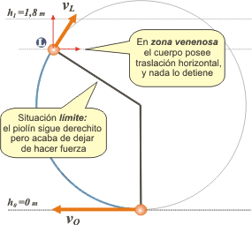
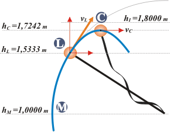

NO ME SALEN
PROBLEMAS RESUELTOS DE FÍSICA DEL CBC
(Leyes de conservación, energía mecánica)
|
|

|
Adicional No me salen E3 - Péndulo venenoso*. A un cuerpo cuya masa vale un kilogramo, que está en reposo y colgado de un hilo de un metro, se le imprime una velocidad horizontal de seis metros por segundo. ¿Hasta qué altura llega, y cuánto vale la tensión del hilo en el instante en el que la alcanza?
|
| Este ejercicio causa estragos en los cursos elementales: es un problema para expertos. No tanto expertos en física sino expertos en orden, ya que no tiene ningún secreto que no se te haya develado antes.
Veamos qué ocurre.
El conflicto: si operásemos ingenuamente compararíamos el punto inferior, que llamé O, con una hipotética posición en la que la velocidad del cuerpo se anule. Esa posición hipotética la llamé I (por imposible). Como se trata de una transformación conservativa la comparación adquiere esta forma:
EMO = EMI
ECO + EPO = ECI + EPI
Si decretamos que el cero de las alturas se halle justo en la posición O, la energía potencial de ese punto valdrá cero. Y si -ingenuamente- suponemos que en el punto más alto la velocidad valdrá cero, también se anula la cinética del hipotético punto. |
|
|
 |
Luego, operando, encontramos que la altura de I, donde la velocidad se anula, vale 1,8 m. ¡Cataplasmas! !A esa altura ya fue superado el ángulo girado de 90 grados! O sea el cuerpo debe andar por donde te lo marqué en este esquema.
Pero si en I la velocidad fuera cero, a partir de ese instante en que arribó caerá por la vertical inexorablemente. Algo anda muy mal en este asunto. Los cuerpos no suelen moverse en trayectorias como ésa... |
|
|
|
| Yo diría que tiene que seguir de largo hacia la derecha... pero no puede arrancar hacia allá después de haberse frenado. Tengo la impresión de que el error estaba en suponer una velocidad mínima igual a cero. Si la velocidad inicial hace que el péndulo supere los 90 grados, a partir de ahí ya comienza a moverse hacia la derecha. Ese desplazamiento horizontal no hay cómo frenarlo, hasta no superar los 180 grados. Hay algo así como una zona venenosa -el cuadrante que va desde los 90 hasta los 180 grados- en el que el cuerpo no puede detenerse. |
|
|
|  |
De modo que si el envión de abajo es lo suficiente grande como para que el cuerpo supere los 90 grados, pero no tanto como para superar los 180 con el piolín extendido, entonces, la piola se afloja durante el movimiento en una posición que llamaré L (por límite).
En tal caso se moverá con dos tipos de movimiento: al principio, como buen pendulito, con un movimiento circular no uniforme. Y a partir de L, cuando el hilo "lo suelta", como proyectil libre, en un tiro oblicuo.
¿En qué instante se realiza el cambio de movimiento? ¿Cómo hallar L? |
|
|
|
La pista: La clave está en la tensión del piolín ya que el movimiento circular concluye cuando ésta se hace cero. En ese instante, la fuerza centrípeta que corresponde al movimiento circular debe ser provista exclusivamente por el peso (que, por suerte, ya apunta hacia adentro de la circunferencia). Y para que te quede más claro te hice un diagrama de esa situación: |
|
|
 |
Me voy a valer -por un rato- del ángulo α, que el hilo forma con la horizontal. Fijate que vuelve a aparecer junto al invencible peso. Te pinté dos triangulitos, ambos rectángulos. Las relaciones trigonométricas de α son: en el naranja
hL — hM = R sen α
hL— R = R sen α
sen α = (hL / R) – 1
y en el verde
PLC = P sen α |
|
|
|
No hace falta que te haga notar que la altura del cuerpo cuando el hilo está horizontal, o sea hM, es justamente el largo del hilo y, también, el radio de giro, R.
La segunda ley de la dinámica aplicada a la situación límite nos dice que la sumatoria de las fuerzas que apunten hacia el centro de giro (es este caso hay una sola y es PLC) será igual al producto entre la masa del cuerpo y su aceleración centrípeta:
PLC = m . aC
m . g sen α = m . vL² / R
g sen α = vL² / R
vL2 = R g sen α = R g [ (hL / R) – 1 ]
vL2 = g hL – R g
Guardemos esta última relación en nuestros corazones.
Solución: Bueno, ahora sí, llegó el momento de utilizar las leyes de conservación, vamos a comparar energéticamente las situaciones inicial y límite.
ECO + EPO = ECL + EPL
½ m vO² = ½ m vL² + m g hL
vO² = vL² + 2 g hL
Si reemplazamos por la ecuación que guardamos en los corazones:
vO² = g hL— R g + 2 g hL
vO² = 3 g hL — g R
hL = 1,5333 m
Hasta acá, ubicamos la altura del sitio donde el cuerpo termina su movimiento pendular e inicia su vida libre. Para conocer su destino resulta importante no sólo saber dónde está, sino cuánto vale y hacia dónde apunta su velocidad. El módulo de la velocidad, ahora que tenemos a hL, se lo podemos pedir a la ecuación que estaba en nuestros corazones... |
 |
|  |
vL = 2,309 m/s
y estará inclinada un ángulo igual al complementario de α. De donde surge que
vLx = 1,231 m/s
vLy = 1,953 m/s
los dibus los hice todos a escala, y parecen resultados bastante razonables. Con esta batería de datos vamos a ver si ubicamos el punto más alto de todo el recorrido, que llamé C (por culminación, que es el nombre técnico para estos casos). |
|
|
|
Ecuaciones horarias:
x = 1,231 m/s . t
y = 1,5333 m + 1,953 m/s . t — 5 m/s² . t²
vy = 1,953 m/s — 10 m/s² . t
A estas tres ecuaciones les vamos a pedir que hablen del punto C, ahí donde la velocidad vertical del cuerpo se anula. (Este tipo de discurso me suena conocido de alguna parte... no sé de dónde...)
0 m/s = 1,953 m/s — 10 m/s² . tC
yC = 1,5333 m + 1,953 m/s . tC — 5 m/s² . tC²
|
|
|
| |
yC = 1,7242 m |
(aplausos, ovación) |
|
|
|
Comprobación: La comprobación es sencilla: fijate que llegamos hasta acá por cinemática, la conservación energética la usamos hasta mitad del camino. Bien, apliquemos el teorema de conservación para ver si contiene al punto C. Dicho de otro modo... ¿será cierto que la energía mecánica en C es igual a la de los otros puntos? No nos olvidemos que el cuerpo llega a C volando en un tiro oblicuo, de modo que su velocidad e el punto más alto no es otra que la de traslación horizontal, vLx.
Efectivamente |
|
|
| |
18 J = ½ m vLx² + m g hc |
a mí me da, ¿y a vos? |
|
|
|
DISCUSION: Es un ejercicio larguísimo... si llegaste hasta aquí es porque tenés un problema psiquiátrico serio... y no sé si tiene cura. Pero al menos no estás solo. |
| |
| DESAFIO: ¿Cuánto vale la aceleración en C? |
|
 |
| |
| *Así llamaron a este problema Agustín Rela y Jorge Sztrajman, que lo presentaron en un taller de intercambio de experiencias didácticas de proferores de Física. Está tomado de V. Lange, Paradojas y sofismas físicos, Mir, Moscú, 1984. |
|
| |
|
| Algunos derechos reservados.
Se prohibe terminantemente imprimir en blanco y negro y sin citar al autor que sigue tomando mate. Última actualización may-07. Villa Pueyrredón, Buenos Aires, Argentina. |
|
|
|